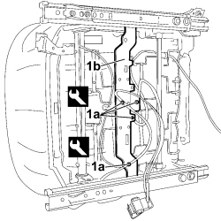
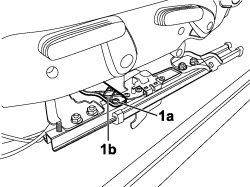
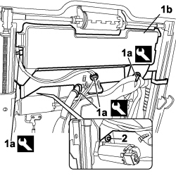
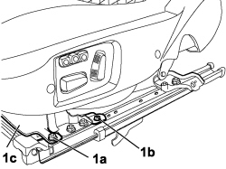

7045J82 FRONT SEAT CONNECTORS SUPPORT BRACKET, (ONE) LH OR RH - R R WITH SEAT TAKEN OFF
- Path
- Procedures > 70 FITTINGS > 7045 FRONT SEATS > 7045J FRONT SEAT ELECTRIC MOVEMENTS > 7045J82 FRONT SEAT CONNECTORS SUPPORT BRACKET, (ONE) LH OR RH - R R WITH SEAT TAKEN OFF
- Kind
- repair procedure (removal / refitting; the operation number is the code)
- Applies to
- all engines; all production periods; only with equipment: ELECTRIC SEATS
- Interactive page
- https://sloeber94.github.io/elrnDB-fCrm/en/#/194001122
Applies to: all engines; all production periods
 Removing
Removing
 Refitting
Refitting1. Using the special tool, release the retaining buttons (1a) to detach the wiring from the connector mounting bracket (1b).
Tool | Description | Function | Validity |
|---|---|---|---|
1878077000 | Knife | Retainer removal |

Applies to: all engines; all production periods
1. Undo the fixing bolt (1a) on both sides and remove the connector mounting bracket (1b).

Applies to: all engines; all production periods
Refitting
Removing- Position the connector mounting bracket and tighten the fixing bolts to the guides.
- Fit the buttons retaining the wiring to the connector mounting bracket.
Applies to: all engines; all production periods; only with equipment: ELECTRIC SEATS
Removing
Refitting1. Using the special tool, release the retaining buttons (1a) to detach the wiring from the connector mounting bracket (1b).
Tool | Description | Function | Validity |
|---|---|---|---|
1878077000 | Knife | Retainer removal |
2. Release the retaining clip from the electric motor mounting pin.

Applies to: all engines; all production periods; only with equipment: ELECTRIC SEATS
1. Undo the fixing nut (1a) on both sides keeping the washers underneath, undo the fixing bolt (1b) and remove the connector mounting bracket (1c).

Applies to: all engines; all production periods; only with equipment: ELECTRIC SEATS
Refitting
Removing- Position the connector mounting bracket and tighten the fixing bolts and nuts to the guides.
- Fit the retaining clip to the electric motor mounting pin.
- Fit the buttons retaining the wiring to the connector mounting bracket.